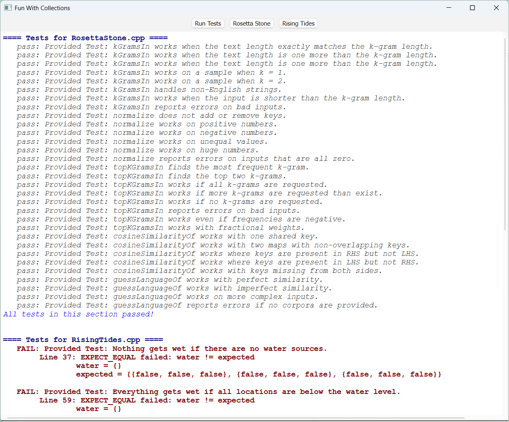
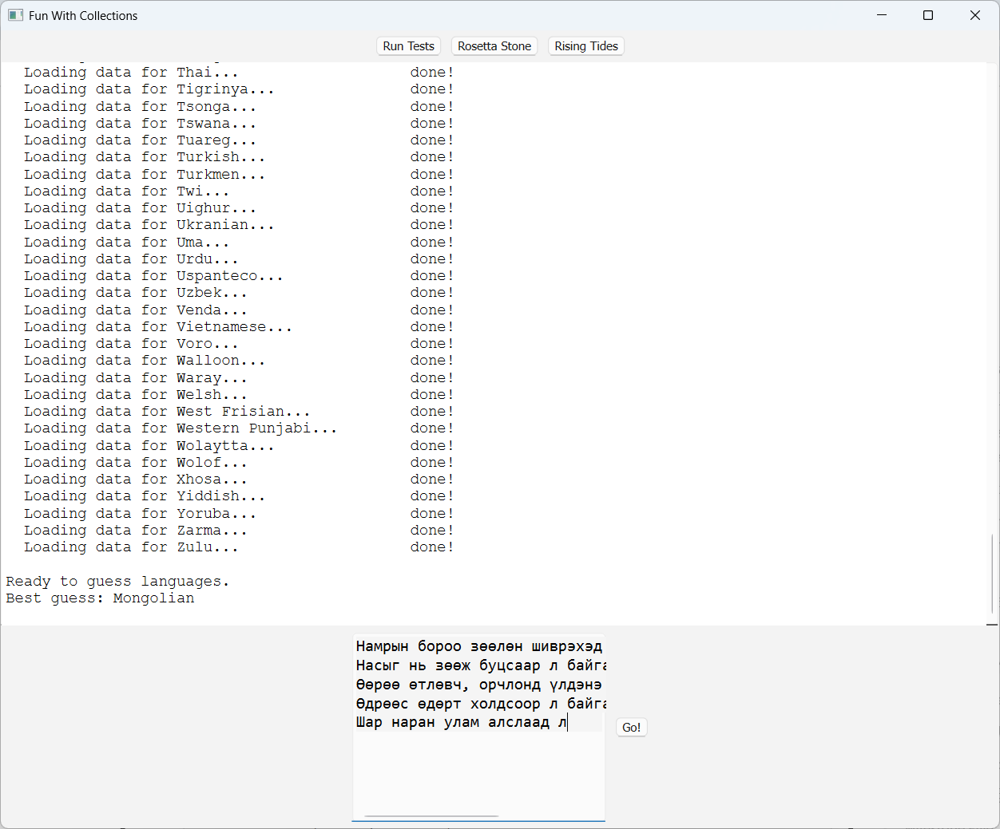
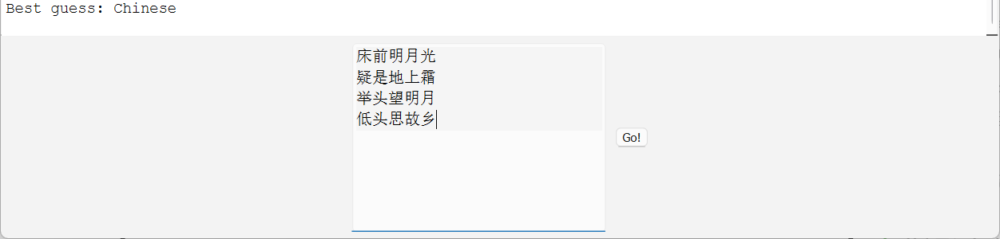
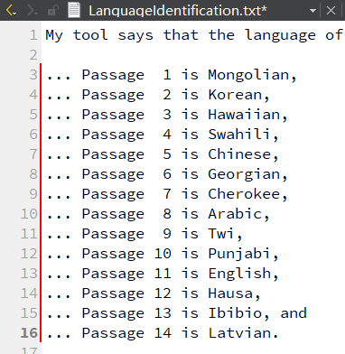
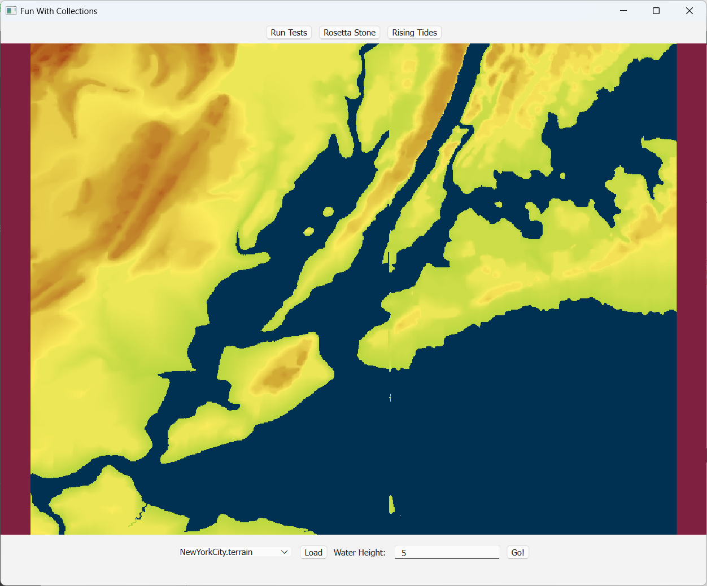

Assignment2¶
Fun with Collections
Part1: Rosetta Stone¶
Milestone One: Form k-Grams¶
Map<string, double> kGramsIn(const string& str, int kGramLength) {
if (kGramLength <= 0) {
error("kGramLength must be positive");
}
Map<string, double> kGrams;
if (str.length() < kGramLength) {
return kGrams;
}
for (int i = 0; i + kGramLength <= str.length(); i++) {
string kGram = str.substr(i, kGramLength);
kGrams[kGram]++;
}
return kGrams;
}
Milestone Two: Normalize Frequencies¶
要求：kGrams -> nGrams 归一化，或者说是**向量的单位化**：将**频率向量**转换为**单位向量**，使得向量的长度（模）为1。
- 计算频率向量的平方和：$S = \sum_{} f_i^2$
- 计算归一化因子：$\sqrt{S}$
- 归一化每个频率：将每个频率除以$\sqrt{S}$就可以了
注意：判断平方和是否为0时，直接
if (sum == 0.0)测试无法通过，虽然不知道为什么全为0平方和的情况下也有浮点数不精确（应该是这个问题？）布尔语句改成sum < 1或者sum < 1e-9都可以。
Map<string, double> normalize(const Map<string, double>& input) {
if (input.isEmpty()) {
error("Map is empty!");
}
double sum = 0.0;
Map<string, double> nGrams; // normalize_frequencies_kGrams
for (string kgram : input) {
sum += pow(input[kgram], 2.0);
}
if (sum < 1) {
error("At least one nonzero value!");
}
for (string kgram : input) {
nGrams[kgram] = input[kgram] / sqrt(sum);
}
return nGrams;
}
Milestone Three: Filter Out Uncommon Trigrams¶
要求：kGrams -> hGrams 得出最频繁的numToKeep个kGrams
用到了优先队列，查文档后再写PriorityQueue
Map<string, double> topKGramsIn(const Map<string, double>& source, int numToKeep) { Map<string, double> hGrams; // high_frequency_kGrams if (numToKeep < 0) { error("numToKeep must be positive!"); } else if (numToKeep >= source.size()) { return source; } else if (numToKeep == 0) { return hGrams; } PriorityQueue<string> pq; for (string kgram : source) { pq.enqueue(kgram, source[kgram]); } while (pq.size() > numToKeep) { pq.dequeue(); } while (!pq.isEmpty()) { double frequency = pq.peekPriority(); string kgram = pq.dequeue(); hGrams[kgram] = frequency; } return hGrams; }
Milestone Four: Implement Cosine Similarity¶
要求：找到两个nGrams的交集后，计算频率乘积的总和，即为余弦相似度。
思想：输入两个nGrams（记为$P_1$、$P_2$），$P_1$、$P_2$是已经**归一化**的kGram频率分布，它们的频率向量是单位向量。通过计算两个向量的点积（内积），得到它们的夹角余弦值，用于衡量相似性。
- 找到共有的 kgram：找到$P_1$、$P_2$中共有的kgram (即Map中key相同的键值对)
- 计算点积：对于每个共有的kgram，将它们在$P_1$、$P_2$中的频率对应相乘，后求和：$\sum_{} P_1(\text{kgram}) \times P_2(\text{kgram})$ (即key相同的键值对，将它们值对应相乘，再求和)
公式：$\text{余弦相似度} = \cos(\theta) = \frac{\mathbf{P_1} \cdot \mathbf{P_2}}{|\mathbf{P_1}| \cdot |\mathbf{P_2}|}$ 由于$P_1$、$P_2$都是已经归一化的单位向量，简化为$\cos(\theta) = P_1 \cdot P_2$
double cosineSimilarityOf(const Map<string, double>& lhs, const Map<string, double>& rhs) { double sum = 0.0; for (string ngram : lhs) { if (rhs.containsKey(ngram)) { sum += lhs[ngram] * rhs[ngram]; } } return sum; }
Milestone Five: Guess a Text’s Language¶
遍历语料库，将当前语言Profile($P_1$)与语料库中的每一种语言Profile($P_2$)都计算余弦相似度*(上一步已实现)* 把similarity作为优先级将language放进优先队列，dequeue到只剩下最后一种similarity值最大的language就是目标语言
string guessLanguageOf(const Map<string, double>& textProfile, const Set<Corpus>& corpora) { PriorityQueue<string> pq; for (Corpus language : corpora) { double similarity = cosineSimilarityOf(textProfile, language.profile); pq.enqueue(language.name, similarity); } while (pq.size() > 1) { pq.dequeue(); } return pq.dequeue(); }##

接下来，测试我们的代码是否能正确识别语言
Milestone Six: Explore and Evaluate¶
   1-10是正确识别的例子，11-14是无法准确识别的例子。提出测试工具可靠性的方法（这部分跳过）
至此，Part1结束。
Part 2: Rising Tides¶
用到了bfs，有点像之前写的岛屿问题。
方向数组
Grid<bool> floodedRegionsIn(const Grid<double>& terrain, const Vector<GridLocation>& sources, double height) { int rows = terrain.numRows(); int cols = terrain.numCols(); Grid<bool> flooded(rows, cols); Queue<GridLocation> q; for (GridLocation source : sources) { if (terrain[source.row][source.col] <= height) { flooded[source.row][source.col] = true; q.enqueue(source); } } while (!q.isEmpty()) { GridLocation location = q.dequeue(); int r = location.row; int c = location.col; int dr[] = {-1, 1, 0, 0}; int dc[] = {0, 0, -1, 1}; for (int i = 0; i < 4; i++) { int nr = r + dr[i]; int nc = c + dc[i]; if (nr >= 0 && nr < rows && nc >= 0 && nc < cols && !flooded[nr][nc] && terrain[nr][nc] <= height) { flooded[nr][nc] = true; q.enqueue(GridLocation(nr, nc)); } } } return flooded; }就把代码贴上来，好歹做点笔记啊喂！完全不管复习时候的自己的死活是吧Orz
 恭喜完成Assignment2，耶( •̀ ω •́ )y